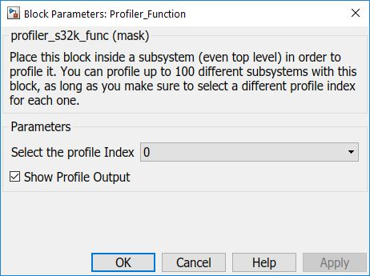

Profiler Function Block
This block profiles the execution time of a function. It places profiling code at the beginning and the end of the function this block is placed in. Up to 100 functions can be profiled at once so a profile index must be selected for each block.
Block Image

Inputs:
- None
Outputs:
- Execution time length in bus clock ticks (UINT32) (if "Show Profile Output" is set).
Parameters and Dialog Box
Profile index
Index of Profile buffer (0 - 99).
Show Profile Output
Enables Profile Output.
Block Dependency
Profiler function may be used when the PIT channel 3 is not being used in the model.
Block Miscellaneous Details:
- None